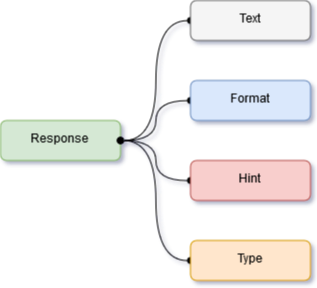

Sending a Response
In Oscova a response is any textual information that is meant to be received by the user after an Intent is invoked. Oscova provides multiple ways of sending responses to users. Once a response is generated for a user id a ResponseReceived event is invoked.

| Property | Description |
|---|---|
| Text | The textual value or message for the user. |
| Format | The format of the response. Usual values are Html, Markdown, Plain and Xml. |
| Hint | A hint to the next user input expected by the bot. |
| Type | The type of response. Usual values are message or other. |
Simple Response
By providing a string parameter to the SendResponse method in result object developers can send simple textual resonses to the user.
Example
[Expression("Hello Bot")]
public void HelloBot(Context context, Result result)
{
result.SendResponse("Hello Bot developer!");
}
Response in different format
Instead of a string value, you can also create a new instance of the Response class, set its properties and call the SendResponse method for sending responses in different formats.
Example
[Expression("Hello Bot")]
public void HelloBot(Context context, Result result)
{
var response = new Response
{
Text = "<b>Hello bot developer!</b>",
Format = ResponseFormat.Html
};
result.SendResponse(response);
}
Timed Response
Developers can also control the delay in time to send an added response to the user. This is done particularly by specifying a message and delay using TimeSpan.
Example
[Expression("Hello Bot")]
public void HelloBot(Context context, Result result)
{
result.SendResponse("Hello Bot Developer!", TimeSpan.FromSeconds(2));
result.SendResponse("Glad you are here.", TimeSpan.FromSeconds(5));
}
For timed responses to work it is essential that an external timer implementation calls the OscovaBot.Timer.PerformTick() method at regular intervals.
The following example shows how an external timer calls the PerformTick() method at every 1000 milliseconds.
Example
var bot = new OscovaBot();
var timer = new Timer { Interval = 1000 };
timer.Elapsed += (sender, eventArgs) =>
{
bot.Timer.PerformTick();
};
timer.Start();